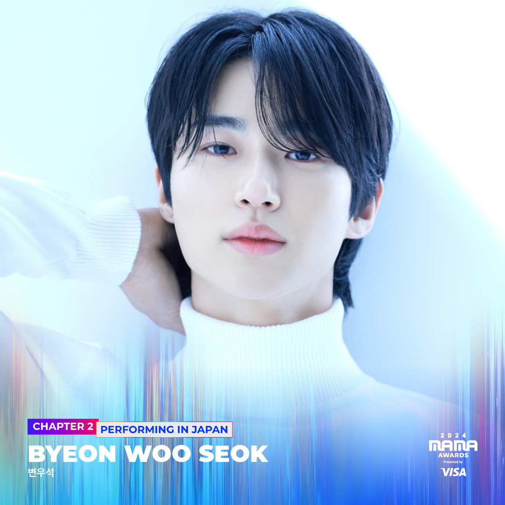

안녕하세요 라보엠입니다.
오늘은 2024 MAMA AWARDS에서 화제를 모은 배우 변우석의 소나기 무대에 대해 자세히 알아보겠습니다. 드라마 속 캐릭터선재에서 현실의 아티스트로 거듭난 변우석의 감동적인 순간을 함께 살펴보시죠.
MAMA 2024에서 빛난 변우석
2024년 11월 22일과 23일, 일본 오사카 교세라 돔에서 열린 2024 MAMA AWARDS는 K-pop 팬들의 축제였습니다. 그 중에서도 배우 변우석의 무대는 빛났습니다. 지난해 MAMA에서 신인상 시상자로 참석했던 변우석은 올해 대상 시상자이자 수상자, 그리고 공연자로 무대에 올랐습니다. 이는 tvN 드라마 선재 업고 튀어 폭발적인 인기 덕분이었죠.

소나기 드라마를 넘어 히트곡으로
변우석이 MAMA 무대에서 선보인 소나기는 선재 업고 튀어의 OST로, 드라마 속 가상 밴드 이클립스의 노래입니다. 이 곡은 드라마의 인기와 함께 실제 음원 차트에서도 대단한 성과를 거뒀습니다.
- 멜론 TOP 100 차트 최고 순위 3위 기록
- 빌보드 '글로벌 200' 차트 진입
- 드라마 종영 6개월 후에도 음원 차트 상위권 유지
MAMA에서의 감동적인 소나기 무대
변우석은 MAMA에서 처음으로 소나기 공개 무대를 선보였습니다. 흰색 코트와 수트를 입고 등장한 그의 모습은 많은 팬들의 환호를 받았습니다. 수만 명의 관객 앞에서도 안정적인 가창력을 보여준 변우석은 눈을 감고 첫 소절을 시작했습니다. 가사 한 글자, 한 음정까지 정성스럽게 부르는 모습에서 드라마 속 류선재의 모습이 오버랩되어 더욱 감동적이었습니다.
변우석은 소나기로 '페이보릿 글로벌 트렌딩 뮤직'상을 수상했습니다. 수상 소감에서 그는 "'선재 업고 튀어' 팀과 팬들에게 감사하다"며 겸손한 모습을 보였습니다. "연기자인 제가 좋은 노래를 부를 수 있게 열심히 도와주신 '선재 업고 튀어' 팀과 우리 작품, 노래 많이 좋아해 주신 팬 여러분 진심으로 감사하다"라고 전했습니다.
변우석은 수상 소감을 마무리하며 드라마 속 동료 캐릭터들을 언급했습니다. "인혁아, 현수야, 제이야 우리 상 탔다. 지금까지 이클립스였습니다"라고 말해 팬들의 미소를 자아냈습니다.
이번 MAMA는 변우석이 배우에서 아티스트로 성장한 모습을 확실히 보여준 무대였습니다. 그는 수많은 K-pop 스타들 사이에서도 당당히 자신의 존재감을 드러냈고, 팬들의 뜨거운 사랑을 받았습니다.
소나기 노래 가사
그치지 않기를 바랬죠
처음 그대 내게로 오던 그날에
잠시 동안 적시는 그런 비가 아니길
간절히 난 바래왔었죠
그대도 내 맘 아나요?
매일 그대만 그려왔던 나를
오늘도 내 맘에 스며들죠
그대는 선물입니다, 하늘이 내려준
홀로 선 세상 속에 그댈 지켜줄게요
어느 날 문득 소나기처럼 내린 그대지만
오늘도 불러 봅니다, 내겐 소중한 사람
Oh
떨어지는 빗물이 어느새 날 깨우고
그대 생각에 잠겨요
이제는 내게로 와요
언제나처럼 기다리고 있죠
그대 손을 꼭 잡아줄게요
그대는 선물입니다, 하늘이 내려준
홀로 선 세상 속에 그댈 지켜줄게요
어느 날 문득 소나기처럼 내린 그대지만
오늘도 불러 봅니다, 내겐 소중한 사람
잊고 싶던 아픈 기억들도
빗방울과 함께 흘려보내면 돼요
때로는 지쳐도, 하늘이 흐려도
내가 있다는 걸 잊지 말아요
그대는 사랑입니다, 하나뿐인 사랑
다시는 그대와 같은 사랑 없을 테니
잊지 않아요, 내게 주었던 작은 기억 하나도
오늘도 새겨봅니다, 내겐 선물인 그댈
맺음말
2024 MAMA AWARDS에서 변우석의 소나기 무대는 단순한 공연 이상의 의미를 가졌습니다. 이는 한 배우의 새로운 도전과 성장, 그리고 팬들과의 특별한 교감을 보여준 감동적인 순간이었습니다. 앞으로 변우석이 배우로서, 그리고 아티스트로서 어떤 새로운 모습을 보여줄지 기대가 됩니다. 영원한 선재의 앞으로의 행보도 응원하겠습니다.